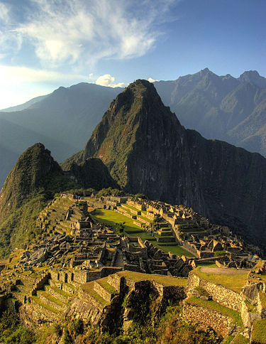
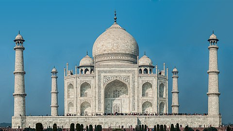
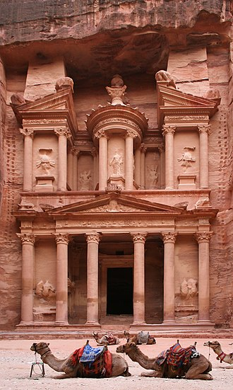
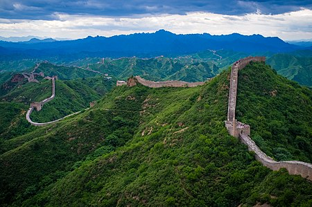
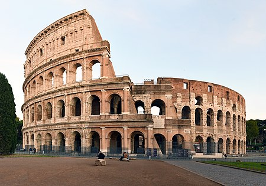

| Cristo Redentor |
Rio de Janeiro - Brasil |
A estátua do Cristo Redentor foi idealizada em meados do século 19, quando o padre francês Pierre Marie Boss exercia suasatividades em uma igreja com vista para o Morro do Corcovado. A ideia de erguer um monumento religioso foi resgatada em 1888 pela princesa Isabel. |
 |
| Machu Picchu |
Peru |
Foi construída pela civilização inca no século XV e abandonada por volta do século XVI. É composta por templos, observatórios astronômicos, palácios, silos, terraços e trilhas construídas com blocos de rocha. Ficou conhecida mundialmente a partir de 1911, após a expedição de Hiram Bingham. |
 |
| Taj Mahal |
Agra - Índia |
A origem do Taj Mahal está ligada ao interesse pessoal do imperador mongol Shan Jahan, que decidiu construir um grande mausoléu em homenagem à sua terceira esposa, chamada Aryumand Banu Begam. A construção foi efetivada por ele em razão da morte da sua esposa, depois de ela dar à luz o décimo quarto filho do casal. |
 |
| Petra |
Jordânia |
O próprio nome da cidade, na atual Jordânia, significa “pedra” em grego. Ao longo do tempo, Petra, berço do povo nabateu, foi conhecida por várias expressões: “cidade rosa”, “rochosa”, “perdida”, “das pedras” e “dos mortos”. Ela foi fundada em 312 a.C., e se transformou em um eixo importante nas rotas comerciais. |
 |
| Muralha da China |
Corta a China de leste a oeste. Ela começa na província de Gansu e termina no Golfo de Bohai. |
A Muralha da China começou a ser construída em 220 a.C, a partir das ordens de Qin Shihuang, imperador chinês daquela época. A mesma foi finalizada somente no século XVI. A muralha foi erguida em razão da grande incidência de invasões dos povos do norte vindos da Mongólia e da Manchúria. |
 |
| Coliseu |
Roma - Itália |
O Coliseu foi inicialmente construído pelo imperador Vespasiano para agradar à cidadania inquieta após o reinado de Nero. Foi construído para realizar jogos de gladiadores, batalhas entre homem e animais e para outros espetáculos públicos, incluindo execuções públicas. |
 |
| Chichén Itzá |
Yucatán - México |
Por volta do século V da Era cristã, os Itzá, uma tribo maia, fundaram Chichen Itzá, que posteriormente se tornou um centro político, religioso e de peregrinação. Os moradores da cidade ficaram conhecidos como os “feiticeiros da água”, pois se organizavam ao redor dos cenotes que contém água potável. |
 |